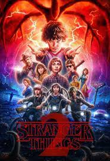

Temporadas

Temporada 1
En Hawkins, Indiana, un niño desaparece misteriosamente. Sus amigos emprenden la búsqueda y descubren a Eleven, una niña con poderes especiales. Juntos se enfrentan a experimentos secretos y al temible Mundo Invertido.

Temporada 2
Un año después, Will Byers sigue conectado al Mundo Invertido. Una amenaza aún mayor, el Azotamentes, pone en peligro a Hawkins mientras Eleven busca su lugar en el mundo.

Temporada 3
El verano trae diversión, romances y el nuevo centro comercial Starcourt. Pero el Azotamentes regresa con más fuerza, utilizando nuevos huéspedes para atacar a Hawkins.

Temporada 4
Los amigos están separados, pero un nuevo villano, Vecna, comienza a atacar las mentes de los jóvenes de Hawkins. El misterio conecta con los orígenes del Mundo Invertido.